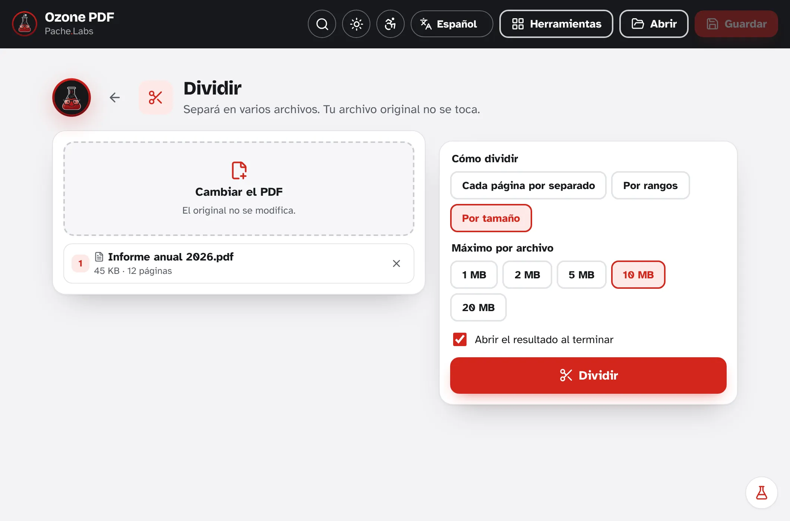
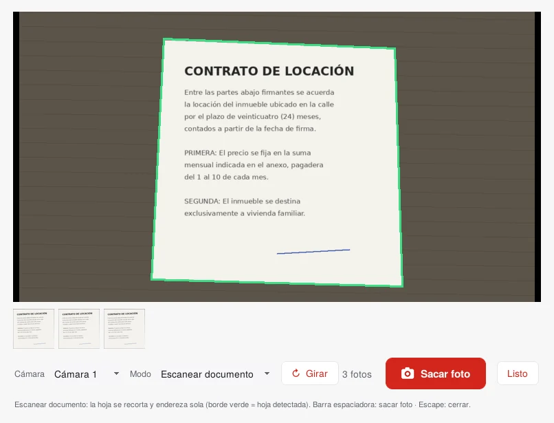
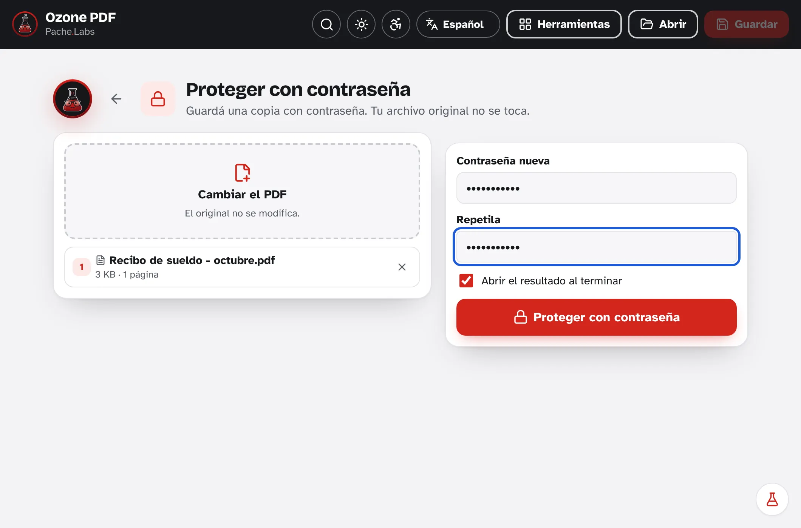
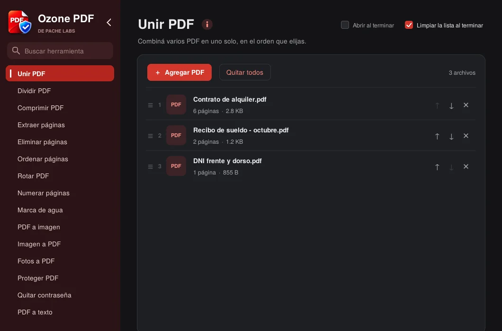

Combine several PDFs into one
Drag the files into the window, put them in any order and you're done: you get a single PDF. Your original stays the same; a new copy is always saved.

 Ozone PDF
Ozone PDF
Merge, split, compress, protect and scan documents for free. Everything happens on your computer.
For Windows 10 and 11. Free and open source.
I built it because I saw many people who work with sensitive information, in all kinds of fields, use websites to merge or shrink a PDF: contracts, payslips and IDs ended up uploaded to sites nobody knows who runs. Today, with cyberattacks more frequent than ever and artificial intelligence making them easier, a document uploaded to the internet is an exposed document. Ozone PDF does the same as those websites, but everything happens on your computer.
Drag the files into the window, put them in any order and you're done: you get a single PDF. Your original stays the same; a new copy is always saved.
Does the system reject files over 25 MB? Split it by size, by page ranges or every few pages. You can also compress it so it weighs less.

Hold the page in front of your laptop camera: the program detects it (marks it in green), crops it and straightens it. Take one photo per page and it builds the PDF for you.

Protect a PDF with AES-256 encryption before sending it, or remove the password from one you already know.

Type what you need in the search box ("merge", "password", "photo") and the tool appears. It has a dark mode and follows your Windows theme.

Security is not just another feature: it is the reason Pache Labs exists. Every version is tested to check that the program does not connect to the internet, the code stays open for anyone to review and we will never add ads, accounts or tracking. If a change ever put your data at risk, it would not ship.
Free, for 64-bit Windows 10 and 11.
Recommended: from the Microsoft Store it installs without Windows warnings and updates itself.
With the .exe installer, Windows may show "Windows protected your PC" because the program is new and not many people have downloaded it yet. Click More info and then Run anyway. If you install it from the Microsoft Store, that warning does not appear.
If you work in IT and want to install it on every PC, there is an .msi installer made for that. It works with Group Policy (GPO), Intune or SCCM.
C:\Program Files\Ozone PDF.Silent installation
msiexec /i Ozone_PDF.msi /qnUninstallation
msiexec /x Ozone_PDF.msi /qnCheck the firewall rule:
Get-NetFirewallRule -DisplayName "Ozone PDF - sin red"Found a bug, missing a tool or have an idea? I read every message.
You can also write to me at pache.labs@gmail.com.
Ozone PDF is free and will stay that way. If you want to help me make more programs like this one, you can buy me a coffee. And if not, telling someone who needs it also helps a lot.